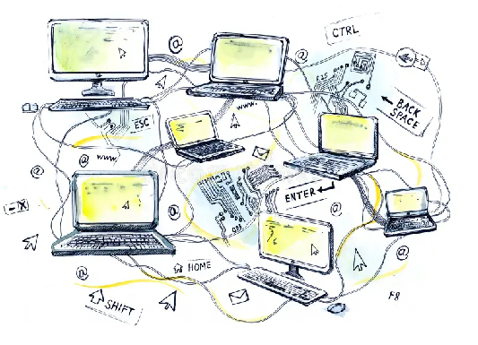
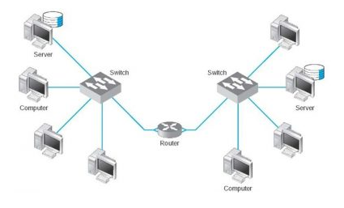
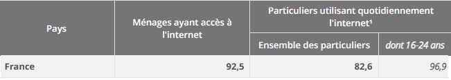
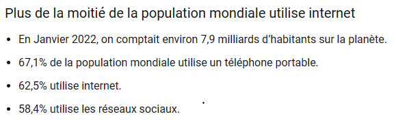

Internet
1) Qu'est ce que Internet
Internet est un réseau de communication mondial accessible au grand public, composé à la fois de
réseaux
publics et privés, tels que les réseaux universitaires, commerciaux et gouvernementaux.
Ces réseaux se regroupent pour former un réseau de transmission par paquets.
Il existe deux variantes principales de transmission :
- Datagrammes: Les données sont transmises sans connexion
exemple : via Ethernet et IP
- circuits virtuel : Les données sont transmises avec une connexion, comme
exemple : c'est le cas avec X.25.P
D'où vient le terme "Internet" ?
Le terme américain "Internet" est dérivé de la contraction de "interconnected networks",
ce qui signifie en français "réseaux interconnectés".
Les origines exactes du terme "Internet" remontent aux débuts du développement d'ARPANET,
le premier réseau à transfert de paquets conçu aux États-Unis. Le 1er janvier 1983,
le nom "Internet",
déjà en usage pour désigner
l'ensemble d'ARPANET et de plusieurs réseaux informatiques, est devenu officiel.
3) Qui a créé Internet ?
Internet a été créé par un consortium de chercheurs et d'ingénieurs au cours des années 1960 et 1970.
Il n'a pas été créé par Tim Berners-Lee. Ce dernier est célèbre pour avoir inventé le World Wide Web
(WWW) en 1989, qui est une application basée sur Internet.
4)Comment fonctionne Internet ?
Les ordinateurs sont connectés les uns aux autres au sein du réseau, et tous ces réseaux sont interconnectés.
Cela permet à un ordinateur de communiquer avec un autre, même s'ils se trouvent dans des réseaux éloignés.
Les ordinateurs échangent rapidement des informations à travers le monde.
Il existe plusieurs méthodes de transmission de données sur Internet.


Internet fonctionne en utilisant la commutation par paquets, une méthode de regroupement
de données transmises sous forme de paquets composés d'un en-tête et d'une charge utile.
Les données de l'en-tête dirigent le paquet vers sa destination, où les données sont extraites,
puis réassemblées pour être lues. Cela est réalisé grâce au protocole TCP/IP.
Internet suit un modèle en couches, où chaque couche utilise un protocole de communication pour échanger des informations. Deux protocoles essentiels sont :
-IP (Internet Protocol) : Il définit le mode d'échange élémentaire entre les ordinateurs
en leur attribuant une adresse unique sur le réseau.
-TCP (Transmission Control Protocol) : Il est responsable de l'établissement de la
connexion et du contrôle de la transmission. C'est un protocole de remise fiable qui
garantit que le destinataire reçoit correctement les données.
5) Qui sont les utilisateurs d'Internet ?
De nos jours, tout le monde peut avoir accès à Internet sans exception, à condition d'avoir un appareil compatible. Par exemple,
en France, en 2022, 92,5 % des Français avaient accès à Internet, selon l'INSEE. Au niveau mondial, 62,5 % des personnes ont
accès à Internet, et la seule condition est de disposer d'un appareil permettant l'utilisation d'Internet.


Sources : google
6) Avec quels appareils pouvons-nous utiliser Internet ?
Internet est devenu quasiment indispensable
pour de nombreuses personnes, et il peut être
S utilisé avec divers appareils connectés,
tels que les smartphones, les ordinateurs,
les consoles de jeux, les télévisions, les tablettes,
les montres connectées, etc.